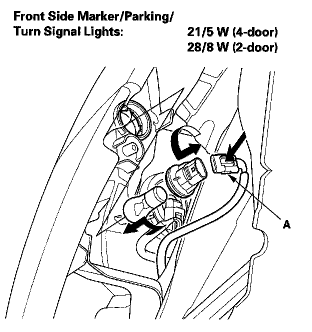

Turn Signal Lamp: Service and Repair
Bulb ReplacementFront Side Marker/Parking/Turn Signal Lights
1. Remove the inner fender.
- 2-door
- 4-door

2. Disconnect the 3P connector (A) from the front side marker/parking/turn signal light.
3. Turn the bulb socket 45° counterclockwise to remove the bulb.
4. Install a new bulb in the reverse order of removal.